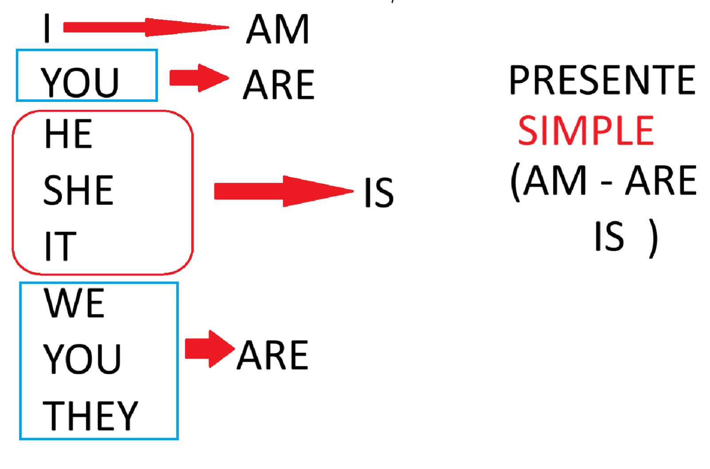

Verbo 'To Be' - Presente Simple
Recordar la regla fundamental para conjugar el verbo ser/estar dependiendo del pronombre:

- I ➡️ AM
- You ➡️ ARE
- He / She / It ➡️ IS (Tercera persona del singular)
- We / You / They ➡️ ARE (Plurales)
Reglas de Oro - Clase 2
1. El uso de artículos: "A" vs "An"
Usamos el artículo para evitar sonar como "Yo soy geología estudiante". Recuerda la regla del sonido:
- A (Antes de sonido consonante): I am a geologist. (Soy un geólogo).
- An (Antes de sonido vocal): We found an emerald. (Encontramos una esmeralda).
2. Verbo 'To Have' (Posesión vs. Logro)
Aunque "I have a job" (Tengo un trabajo) es correcto, para sonar como un nativo cuando consigues un puesto nuevo, usamos el pasado de get:
- ✅ I got a job! (¡Me dieron el trabajo! / Fui contratado)
3. Negaciones con 'To Be'
El "not" SIEMPRE va después del verbo To Be.
- The Romeral fault is not safe. (La falla de Romeral no es segura).
- We are not tired. (No estamos cansados).
4. Expresar la Edad y Estados
En inglés la edad no se "tiene", se "es". Los estados de ánimo o salud son adjetivos, no verbos.
- Edad: I am 23 years old. (NO "I have 23 years").
- Estado Físico: I'm hanging. (Modismo: "Estoy colgando / En la lucha / Resistiendo").